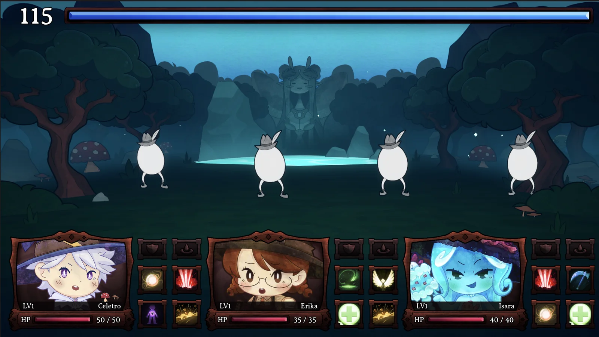
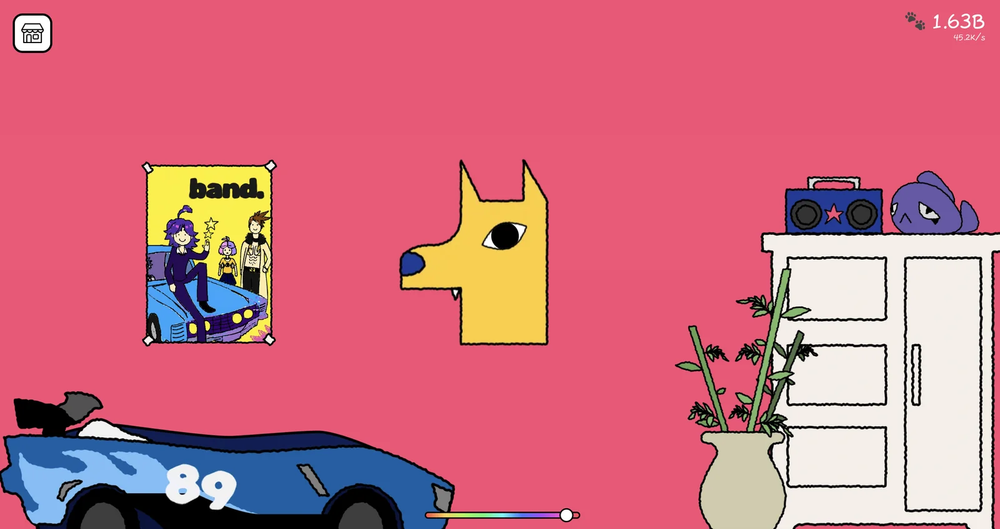

Game Design
- System design
- Gameplay design
- Documentation
- Prototyping
- Gameplay iteration
- Progression
- Balancing
- Mechanics & loops
Systems & Balance Designer
I derive systems instead of guessing at them, boss damage from the player's expected HP, a 45-minute economy solved backwards from the clock, and then I write the code that runs them. The last one placed 21st of 10,587 at GMTK Jam 2026, in four days.
See the work ↓Each one opens into a full systems breakdown: loops, formulas, tables.
 01
Play in browser
01
Play in browser
Boss-rush western duel (web)
Game Design, Programming & Audio
You're an accountant hired by letter to collect on a town full of outlaws, one bullet per debt. The whole game is one button: wait for the count to hit zero, then draw. Nobody shoots faster than you, so every outlaw cheats the count instead, each one in the way their character would. Made in 4 days for GMTK Jam 2026; placed 21st.
 Play on itch.io
Play on itch.io
Top-down action roguelike (PC)
Lead Game & Systems Designer
A skeleton office-drone defends his boss's crypt from scheming minions. Built at Prisma Game Lab, I led the design and drove combat, progression and boss fights from one big balancing sheet, plus sound, UI and art.

03Roguelite dungeon crawler (PC)
Game & Systems Designer / Gameplay Programmer
A roguelite dungeon crawler where you play a coward caretaker who can't cast a single spell, so you send the toddlers in your care to fight instead. Built by two people, it's driven by an enemy AI that scores every (skill, target) pair by weighted random, with intelligence and conviction as separate difficulty dials. Still in active development.

04 Play in browserIdle/clicker game (web)
Solo Developer & Systems Designer
A cozy idle-clicker where the goal is to fully furnish the room where your dog lives: click to earn affection, spend it on furniture and upgrades, one piece at a time. A solo web project whose entire economy is derived from a single number (how long the run should take) through one closed-form balancing spreadsheet.
I'm a systems and balance designer: I decide what the numbers should be, prove it in a sheet, then write the code that runs them.
At Prisma Game Lab I've worked as a game designer and coordinated project teams, shipping prototypes, running playtests and keeping design and implementation talking to each other. I'm finishing a Design degree at PUC-Rio.
Balance is the core of what I do, and the breadth around it is deliberate. I prototype in Unity and Godot, write the gameplay code, compose the audio, make 2D art and 3D models, and design the UI.
What I actually use, grouped the way I work.
I design the system, derive the numbers, build it, and tune it, without handing it off between disciplines. Open to new work, get in touch.